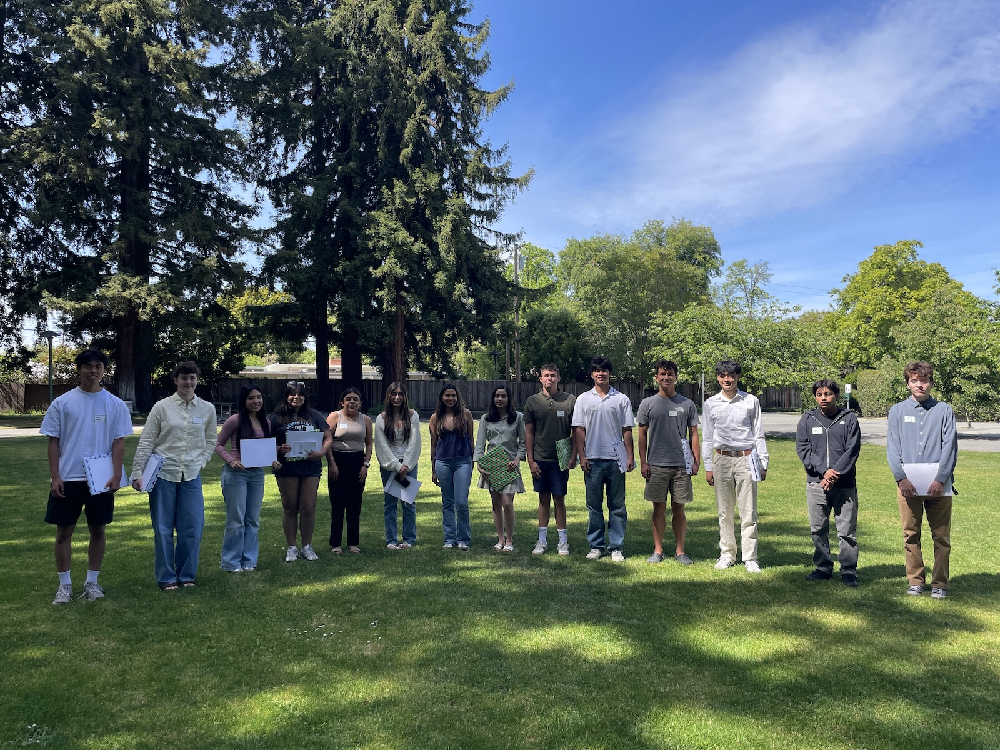

Since 1964, one Palo Alto neighborhood has been helping fuel the next chapter for graduating seniors.
The Greenmeadow Community Scholarship Fund awards scholarships every spring to graduating seniors, some from Greenmeadow and some from Menlo-Atherton High School, where counselors help us find students for whom paying for college will be genuinely hard. Every dollar comes from this community. Every finalist is interviewed by a volunteer who lives in it.
Processed securely by PayPal. Card or PayPal account.
A 501(c)(3) nonprofit. Tax ID 23-7037165. Your gift may be tax deductible as allowed by law.
What a scholarship is
Each year the board selects finalists from Greenmeadow and from Menlo-Atherton, interviews every one of them, and awards scholarships.
Finalists who do not receive a scholarship receive a textbook stipend instead. And every finalist, win or not, chooses a gift book of their own.
Last spring fifteen finalists came through our two committees. Six received scholarships. All fifteen went home with something.
How finalists are chosen
Volunteers read every application, then sit down with every finalist for a real interview.
Four things matter:
- Academic performance, in the context of what a student was handed.
- Community involvement, which usually means the unpaid, unglamorous kind.
- Work experience, including the jobs taken to help a family stay afloat.
- Worthy character. We weigh the interview most heavily of all.
The finalists from the class of 2026

A few examples of our finalists’ stories
Jack Spitzer taught himself to solder and program after his drone crashed into the Pacific, then built a water polo stats app now used by more than thirty schools across California.
Katherine Vera Yarleque arrived from Peru as a sophomore and built her entire high school record in a language she was still learning.
Lukas Chen heard parents complain about how fast kids outgrow cleats, so he started a soccer gear exchange and outfitted twenty families on his first distribution day.
How this started
In 1964, the community began awarding a scholarship to a graduating senior in memory of a high school senior from the neighborhood, lost to an accidental drowning.
It has happened every spring since.
Five years later the founders decided the circle should not stop at the edge of the tract, and added scholarships for seniors at Ravenswood High School in East Palo Alto. When Ravenswood closed in 1976 the program moved to Menlo-Atherton, where it has stayed. That award is now the George Ebey Scholarship, named for a founder who guided this program for decades.
The scholarship fund has operated continuously since 1964. Every dollar comes from this community.
Ways to give
Online
By check
Payable to Greenmeadow Community Scholarship Fund, Inc.
Mail to:
GMCSF, Inc.
c/o Tom Brown
410 Adobe Place
Palo Alto, CA 94306
Donor-advised fund
Search “Greenmeadow” in your DAF account.
Corporate matching
Many local employers match through Benevity or YourCause. A match doubles your gift at no cost to you.
IRA distribution
At 70½ or older you can give directly from an IRA, tax free. At 73 and older it also counts toward your required minimum distribution.
Appreciated stock
May earn a deduction at full market value with no capital gains tax. Contact Steve Fung, Treasurer.
Who runs this
A volunteer board of directors with roots in the Greenmeadow community.
Nobody is paid. Close to a hundred cents of every dollar reaches a student.
- Maria Brown
- Phyllis Brown
- Craig Chalmers
- Willa Chalmers, Secretary
- Steve Fung, Treasurer
- Stu Greene
- Chris Hetterley
- Stu MacPherson
- Moe McNally
- Carmen Rodwell
- Tom Brown, President
Get involved
The board looks for neighbors willing to read applications, interview finalists, and help run the April reception. It is a few evenings between January and April. If that sounds like something you would enjoy, get in touch.
info@greenmeadowsf.org